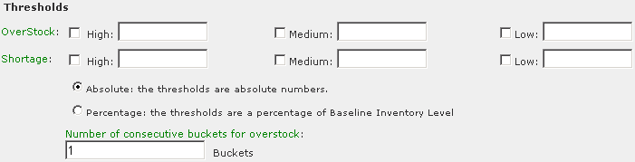

Timogen Web Site
Voice: (650) 903-9888
Fax: (650) 903-9327
info@timogen.coms
Impact Alert Thresholds
Impact Alert thresholds cover both overstocks and shortages and you can define High, Medium, and Low value levels for both that will trigger an alert.

You also define whether the numbers you enter are in absolute numbers (units) or a percentage and how many consecutive time buckets must occur before an overstock alert is triggered. Entering a number greater than 1 in the Number of consecutive buckets for overstock field will exclude transitory overstocks triggering an alert. For example, entering 2 in this field means that if Item inventory at the Location hits an overstock threshold for just one bucket, then returns below the threshold the next bucket, the defined alert will not be triggered.
The values you enter and the choices you make are used in two standard definitions:
· Overstock: [Item] ending inventory is High/Medium/Low units/percent over baseline inventory level for x consecutive buckets.· Shortage: [Item] ending inventory is High/Medium/Low units/percent below baseline inventory level.Use these definitions to calculate what numbers to enter for High, Medium, and Low values (not all are required) so alerts will be triggered at the right inventory levels.
|
|
Timogen Systems Timogen Web Site Voice: (650) 903-9888 Fax: (650) 903-9327 info@timogen.coms |